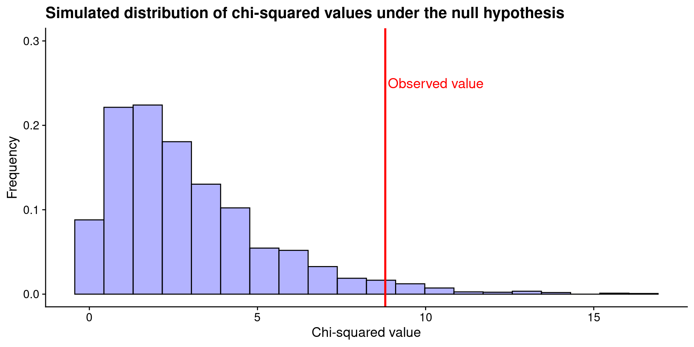
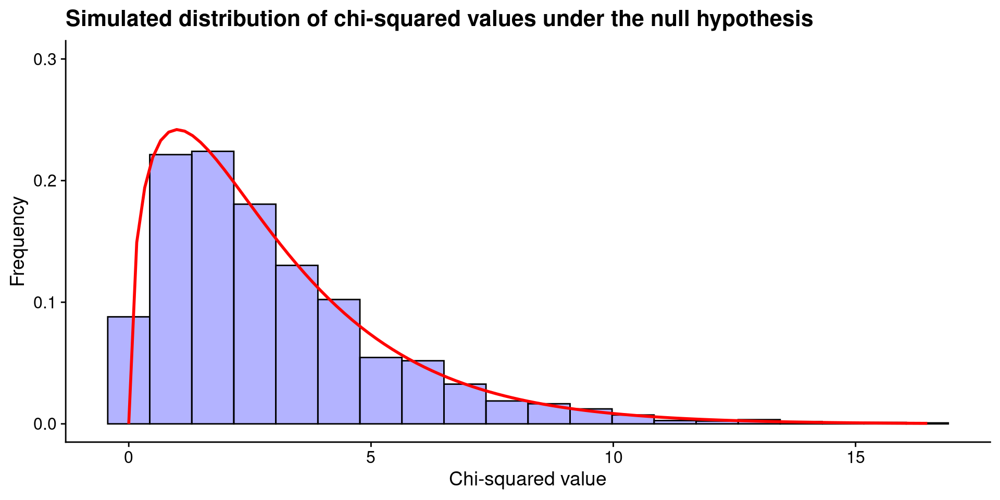

ENVX1002 Introduction to Statistical Methods
The University of Sydney
Apr 2024
Some data are not measured on a continuous scale, but rather as categories.
Consider the following questions:
A biologist claims that when sampling the Australian Botanical Gardens for butterflies, the ratio of the most dominant colours (red, blue, green, and yellow) is equal. How would you determine if the biologist’s claim is true?
A study was conducted on a population of deer to see if there is a relationship between their age group (young, adult, old) and their preferred type of vegetation (grass, leaves, bark). Is age group of the deer independent of their vegetation preference?
How would you measure these variables, and what sort of summary statistics can you use?
We can only count the number of times a particular category occurs, or the proportion of the total that each category represents.
curve(dchisq(x, df = 1), from = 0, to = 9, xlim = c(-10, 10), col = "blue", lwd = 2, ylab = "Density", xlab = "Value", main = "Chi-squared vs. normal")
curve(dnorm(x, mean = 0, sd = 1), from = -9, to = 9, col = "red", lwd = 2, add = TRUE)
abline(v = 0, col = "black", lty = 2)
legend("topright", legend = c("Chi-squared with 1 df", "Normal"), col = c("blue", "red"), lwd = 2)How is the chi-squared distribution used in hypothesis testing?
A biologist claims that when sampling the Australian Botanical Gardens for butterflies, the ratio of the most dominant colours (red, blue, green, and yellow) is equal. How would you determine if the biologist’s claim is true?
Suppose we have the following data on the colours of butterflies after randomly sampling 200 of them:
Therefore:
The test statistic for the chi-squared test is calculated as:
\chi^2 = \sum \frac{(O - E)^2}{E}
where O is the observed frequency and E is the expected frequency.
Under the null hypothesis, the observed frequencies are equal to the expected frequencies i.e. the biologist’s claim is true.
Suppose we repeat the sampling process many times, assuming the null hypothesis is true, each time calculating the test statistic. What would the distribution of test statistics look like?
# simulate sampling of 200 butterflies 1000 times under the null hypothesis and plot the distribution of chi-squared values
set.seed(123)
cols <- c("red", "blue", "green", "yellow")
B <- 3000
test_statistic <- vector(mode = "numeric", length = B)
for (i in 1:B) {
sim <- sample(
x = cols, size = 200, replace = TRUE,
prob = c(0.25, 0.25, 0.25, 0.25)
)
sim_y <- table(sim)
test_statistic[i] <- sum((sim_y - 50)^2 / 50)
}
p1 <-
ggplot(data.frame(test_statistic), aes(x = test_statistic)) +
geom_histogram(aes(y = ..density..), bins = 20, fill = "blue", colour = "black", alpha = 0.3) +
ylim(0, 0.3) +
labs(title = "Simulated distribution of chi-squared values under the null hypothesis") +
xlab("Chi-squared value") +
ylab("Frequency")
p1
Comparing our test statistic to the simulated distribution, we can see that the 0.03% of the simulated values are greater than our test statistic. What does this tell us?
A chi-squared distribution allows us to perform the same hypothesis test without the need for simulation.
ggplot(data.frame(test_statistic), aes(x = test_statistic)) +
geom_histogram(aes(y = ..density..), bins = 20, fill = "blue", colour = "black", alpha = 0.3) +
ylim(0, 0.3) +
stat_function(fun = dchisq, args = list(df = 3), color = "red", size = 1) +
labs(title = "Simulated distribution of chi-squared values under the null hypothesis") +
xlab("Chi-squared value") +
ylab("Frequency")
The results of the simulation suggest that the observed frequencies of butterfly colours are significantly different from the expected frequencies, and we can reject the biologist’s claim.
par(mfrow = c(2, 2))
curve(dchisq(x, df = 2), from = 0, to = qchisq(0.995, df = 2), col = "blue", lwd = 2, ylab = "Density", xlab = "Value", main = "Chi-squared with 2 df")
curve(dchisq(x, df = 10), from = 0, to = qchisq(0.995, df = 10), col = "blue", lwd = 2, ylab = "Density", xlab = "Value", main = "Chi-squared with 10 df")
curve(dchisq(x, df = 50), from = 0, to = qchisq(0.995, df = 50), col = "blue", lwd = 2, ylab = "Density", xlab = "Value", main = "Chi-squared with 50 df")
curve(dchisq(x, df = 100), from = 0, to = qchisq(0.995, df = 100), col = "blue", lwd = 2, ylab = "Density", xlab = "Value", main = "Chi-squared with 100 df")The sample size assumption ensures that the chi-squared distribution is a good approximation of the normal distribution.
A biologist claims that when sampling the Australian Botanical Gardens for butterflies, the ratio of the most dominant colours (red, blue, green, and yellow) is equal. How would you determine if the biologist’s claim is true?
H_0: p_1 = p_2 = p_3 = p_4 = 0.25 H_1: \text{at least one } p_i \neq 0.25
Assumptions
By performing the chi-squared test, we can check the assumptions of the test by looking at the calculated frequences in the output:
Test statistic
The results of the chi-squared test suggest that the observed frequencies of butterfly colours are significantly different from the expected frequencies (\chi^2 = 8.8, df = 3, p < 0.001). We can reject the null hypothesis and conclude that the biologist’s claim is not true.
Note
If you’re interested, compare this result to the simulation we performed earlier.
A study was conducted on a population of deer to see if there is a relationship between their age group (young, adult, old) and their preferred type of vegetation (grass, leaves, bark). Is age group of the deer independent of their vegetation preference?
H_0: \text{Age group is independent of vegetation preference}
No relationship between the two variables
H_1: \text{Age group is not independent of vegetation preference}
There is a relationship between the two variables
Suppose we have the following data on the age group and vegetation preference of 100 deer:
grass leaves bark
young 20 30 10
adult 10 10 20
old 10 10 10Assumptions are met as we can see the contingency table in the previous slide.
Pearson's Chi-squared test
data: deer_data
X-squared = 13.542, df = 4, p-value = 0.008911We reject the null hypothesis since the p-value is less than 0.05.
The results of the chi-squared test suggest that the age group of the deer is not independent of their vegetation preference (\chi^2 = 12.4, df = 4, p < 0.001). We can reject the null hypothesis and conclude that there is a relationship between the age group of the deer and their vegetation preference.
Is age group independent of vegetation preference?
Is the distribution of vegetation preference the same if we compare young, adult, and old deer?
This presentation is based on the SOLES Quarto reveal.js template and is licensed under a Creative Commons Attribution 4.0 International License.